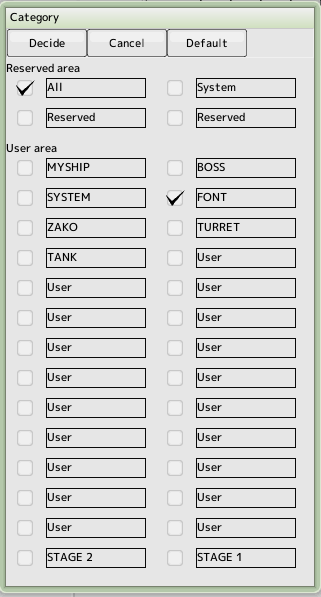

If you set up categories for each part, it will be easier to find the desired part when the number of parts increases
You can search for parts by category by See the project window
There are a total of 32 categories (4 of which are reserved by the system) and you can name them as you wish.
- Reserved Areas
They are reserved in the system
- User Area
Category names can be set to any name
Checking the checkbox indicates that the item belongs to that category
- Default
If you press the default button at the top of the screen, only "All" will be checked
When you create a new part, the default category will be the same as the checkbox in the Category column of the Project window
 back to the original page
back to the original page